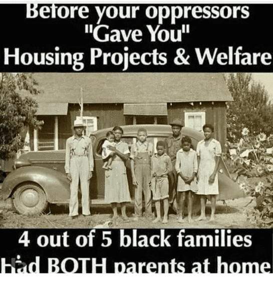

America clearly suffers from a general cultural and moral decay, as Return of Kings has documented so thoroughly. One source of this decay could be the growing landlessness of many Americans, coupled with sedentary lifestyles that are subsidized by an overly-generous welfare state. The solution, perhaps, is to offer an alternative to welfare: the Jeffersonian ideal of a nation of freehold agriculture.
I teach at a small private school in rural South Carolina, and every day I drive past fields of cotton and corn. Besides making for a scenic drive, these fields call to mind Thomas Jefferson’s vision of America as an “empire of liberty,” a nation of small yeoman farmers.
Jefferson’s contention was that a virtuous republic could be maintained only if a substantial portion of the people were involved in the strenuous work of agriculture. Such a life would instill within the farmer virtues like thrift, honesty, and hard work. Further, it would ensure that those men who voted would own a piece of their State and nation, and would make wiser policy decisions because they had a direct, visceral investment in the nation’s governance.
A final, crucial part of Jefferson’s theory was that the alternative—a nation of wage slaves crammed into urban centers—would breed corruption and dependence, as a small and wealthy cadre of political and economic elites could enjoy power through the bribery and exploitation of urban proles. The specter of the Roman Empire’s “bread and circuses”—the bought acquiescence of a non-productive urban population with entertainment and food—haunted Jefferson. Such a world would bring death to liberty and reduce men to feeble wards of the state. The farmer would always have his land to provide; the urban worker may not always have his wages, and had no land on which he could depend to provide sustenance in lean times.
While I don’t believe America as a whole should begin a massive “back to the land” movement, Jefferson was certainly onto something, and his nightmares are at least partially fulfilled in the modern welfare state, which “enslaves” generations of Americans, transforming otherwise productive members of society into politically-useful leeches, living materially-secure but unfulfilling lives in depressing Section 8 housing. While we certainly have an obligation to provide for those who are incapable of doing so for themselves, our social safety net was never intended to be a hammock.

Could we not break the indolence and moral turpitude of the modern welfare state by restoring, in modern form, the Homestead Act of 1862? The Homestead Act opened millions of federal lands in the Old West to settlement, providing a Jeffersonian foundation and boundless opportunities for tens of thousands of Americans.
Rather than cramming unproductive welfare-recipients into poorly-maintained housing projects in congested inner cities—or relegating them to dilapidated trailers on rented land in the middle of nowhere—we could open up millions of acres of federal lands in the West—or elsewhere—for homesteads. With some training in agricultural techniques and some seeds and equipment, poor Americans could earn a new lease on life—and break out of a cycle of dependence and meaninglessness.
Welfare can create a moral void, and while a New Homestead Act would require a great deal of hard work on the part of the participants, those same participants would benefit from the virtue-building nature of that work. In time, they would enjoy a sense of pride and accomplishment from taming the land and providing for themselves and their families.
Further, encouraging young men and women to take up the strenuous life would do much to restore a more traditional culture. Women won’t have the time to march against “patriarchy” while churning butter, harvesting crops, and teaching healthy farm children in the ways of civic virtue. Men could enjoy a hard-won but rewarding sense of freedom.

This is just a preliminary sketch—an idea that’s been percolating in my mind for a few years, inspired both by a conversation with a friend who has done police work in dangerous housing projects, and by the golden fields I drive past every day—and I know there are many complications and facets to consider.
There are, too, other alternatives. The growing Internet economy, for example, has enabled many young men to escape the corporate hamster wheel and the HR overlords of the modern workplace.
That said, America is blessed with abundant lands even now, and a chance at the strenuous life could give tough hope to millions of Americans trapped in dependency. Imagine young men, formerly destined for gang membership or indolence, owning and operating their own farms. Imagine the opioid addict sweating the poison of his habit from his brow.
That’s an America that can begin to re-install the time-honored values that made our nation great, while recreating the powerful “safety valve” that Western expansion provided 150 years ago.
Read More: Young People Are Returning To The Land